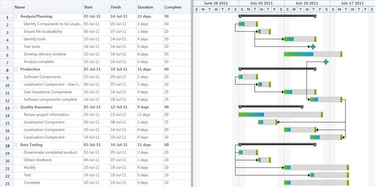
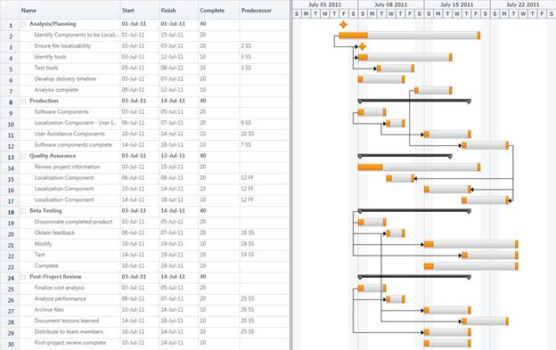

Custom node style enables you to design your own style to the nodes that will be displayed in the Gantt. Currently Gantt Control supports three type of node. They are:
· Header Node
· Task Node
· Milestone
· Progress Indicator
You can apply custom styles for all the three nodes. You can also customize the progress bar of the Task Node. The basic functionalities of the Gantt nodes like resizing, drag and drop and tooltip will be available only when the custom node style has the inbuilt node style’s parts such as drag and drop the thumb and resizing the thumbs. Otherwise the custom node will work properly, but you cannot access these features of Gantt.
Use Case Scenarios
You can customize the node to give a similar look and feel of you product. For example if you are from a steel company, then you can add a style that gives steel rod like look and feel to the node.
You can also design the node based on your organization’s logo.
Adding Custom Node Style to an Application
The following are the steps to add custom node style to an application:
1. Define a style as needed with the target type for each node type as given in the following table:
|
Node Type |
Target Type |
|
Header Node |
HeaderNode |
|
Task Node |
GanttNode |
|
Milestone |
MileStone |
The following code illustrates how to define style:
|
[XAML]
<ResourceDictionary xmlns="http://schemas.microsoft.com/winfx/2006/xaml/presentation" xmlns:x="http://schemas.microsoft.com/winfx/2006/xaml" xmlns:gantt="http://schemas.syncfusion.com/wpf" xmlns:chart="clr-namespace:Syncfusion.Windows.Controls.Gantt.Chart;assembly=Syncfusion.Gantt.Wpf" > <!-- Header Node style--> <Style TargetType="chart:HeaderNode"> <Setter Property="MaxHeight" Value="24"/> <Setter Property="Template"> <Setter.Value> <ControlTemplate TargetType="chart:HeaderNode"> <Border Background="{TemplateBinding Background}" Name="PART_HeaderBorder" BorderBrush="{TemplateBinding BorderBrush}" BorderThickness="0"> <Grid Width="{TemplateBinding NodeWidth}" VerticalAlignment="Center">
<Grid.ColumnDefinitions> <ColumnDefinition Width="10" /> <ColumnDefinition Width="*" /> <ColumnDefinition Width="10" /> </Grid.ColumnDefinitions> <Rectangle HorizontalAlignment="Left" Grid.Column="1" Height="6.4" VerticalAlignment="Top" Width="{TemplateBinding NodeWidth}" Stroke="#FF111111"> <Rectangle.Fill> <LinearGradientBrush EndPoint="0.5,1" StartPoint="0.5,0"> <GradientStop Color="#FF414141" Offset="0" /> <GradientStop Color="#FF6D6D6D" Offset="0.087" /> <GradientStop Color="#FF767676" Offset="0.304" /> <GradientStop Color="Black" Offset="0.957" /> <GradientStop Color="#FF343434" Offset="1" /> </LinearGradientBrush> </Rectangle.Fill> </Rectangle>
<Path Data="M0.3,0.3 L9.834909,0.30036073 9.8351226,5.9832297 5.0695471,10.734966 0.32096295,5.9863821 z" HorizontalAlignment="Left" Grid.Column="0" Height="11.435" Stretch="Fill" Stroke="#FF111111" VerticalAlignment="Top" Width="10.135"> <Path.Fill> <LinearGradientBrush EndPoint="1.009,0.985" StartPoint="0.339,0.286"> <GradientStop Color="DimGray" Offset="0.008" /> <GradientStop Color="#FF7F7F7F" Offset="0.511" /> <GradientStop Color="#FF2A2A2A" Offset="1" /> </LinearGradientBrush> </Path.Fill> </Path> <Path Data="M0.3,0.3 L9.834909,0.30036073 9.8351226,5.9832297 5.0695471,10.734966 0.32096295,5.9863821 z" HorizontalAlignment="Left" Grid.Column="2" Height="11.435" Stretch="Fill" Stroke="#FF111111" VerticalAlignment="Top" Width="10.135"> <Path.Fill> <LinearGradientBrush EndPoint="1.009,0.985" StartPoint="0.339,0.286"> <GradientStop Color="DimGray" Offset="0.008" /> <GradientStop Color="#FF7F7F7F" Offset="0.511" /> <GradientStop Color="#FF2A2A2A" Offset="1" /> </LinearGradientBrush> </Path.Fill> </Path> </Grid> </Border> </ControlTemplate> </Setter.Value> </Setter> </Style>
<!-- Task Node style-->
|
2. Add the style as a resource to the Gantt control in your application.
The following code illustrates how to add the styles to the application:
|
[XAML]
<sync:GanttControl Grid.Row="1" x:Name="Gantt" ItemsSource="{Binding GanttItemSource}" ToolTipTemplate="{StaticResource toolTipTemplate}" VisualStyle="Office2010Silver"> <sync:GanttControl.TaskAttributeMapping> <sync:TaskAttributeMapping TaskIdMapping="Id" TaskNameMapping="Name" StartDateMapping="StDate" ChildMapping="ChildTask" FinishDateMapping="EndDate" DurationMapping="Duration" ProgressMapping="Complete" PredecessorMapping="Predecessor">
</sync:TaskAttributeMapping> </sync:GanttControl.TaskAttributeMapping> <sync:GanttControl.Resources> <Style TargetType="chart:GanttNode" BasedOn="{StaticResource TaskNode}"/> <Style TargetType="chart:MileStone" BasedOn="{StaticResource MileStone}"/> </sync:GanttControl.Resources> </sync:GanttControl> |


Figure 31: Custom Node Style
Samples Link
To view samples:
1. Select Start -> Programs -> Syncfusion -> Essential Studio x.x.xx -> Dashboard.
2. Click Run Samples for WPF under User Interface Edition panel .
3. Select Gantt.
4. Expand the Styles item in the Sample Browser.
5. Choose the Custom Node Style sample to launch.